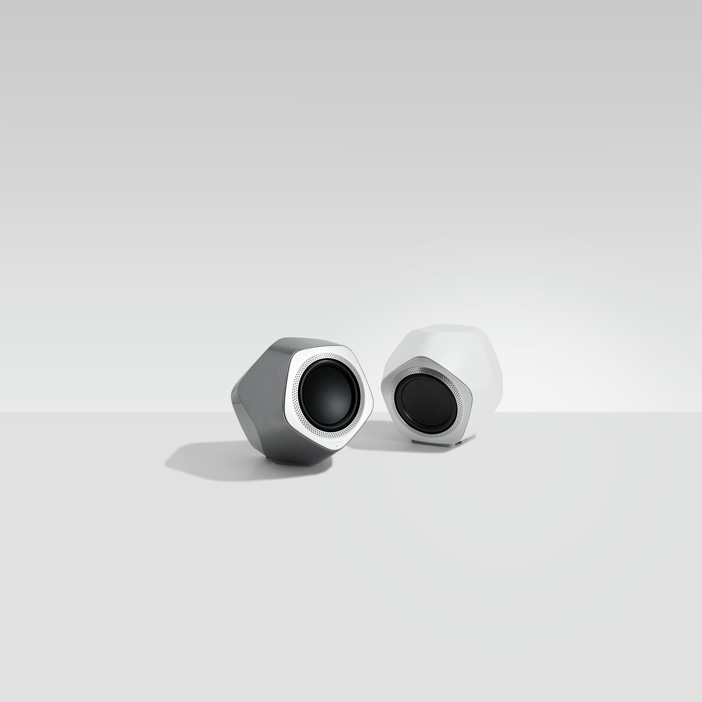

BANG & OLUFSEN
BEOLAB 19
a precision powerhouse
BeoLab 19 is a progressive wireless subwoofer featuring a powerful and dynamic bass, and total flexibility in terms of placement.
Design
surprising symmetry
The dodecahedron, a so-called Platonic solid, is a geometric form named after the ancient Greek philosopher Plato. It normally has twelve pentagonal faces but the designer has squeezed, stretched and cut the shape. The result is somehow familiar yet still surprising and new expression.
DYNAMIC
WIRELESS
SUBWOOFER
WIRELESS SOUND
Immaculate
wireless
design
A new wireless speaker platform based on the innovative WiSA technology that takes wireless audio performance to a whole new level with unprecedented, robust sound quality. WiSA operates in the uncongested 5 GHz wireless U-NII frequency spectrums that are unaffected by interference from conventional wireless networks. Combine that with superior 24-bit, uncompressed audio quality – and it will completely redefine your perception of wireless sound. With Immaculate Wireless Sound, all you need is a single power cable and BeoLab 19 will find and connect to any nearby WiSA-compliant TV or A/V receiver, regardless of whether it is Bang & Olufsen or not.
Anywhere
Regardless where you place BeoLab 19, a simple twist of the position switch will tailor the sound to spread perfect sound waves evenly throughout your room.
Fusing raw strength with distinctive symmetry and accuracy.